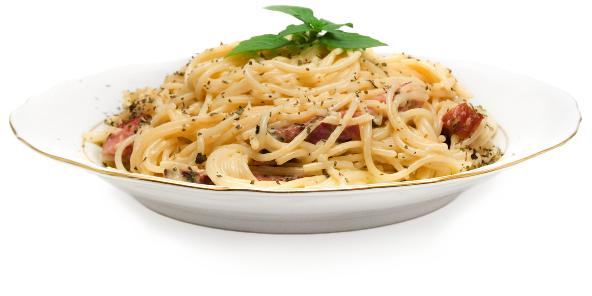

Spaghetti Carbonara

This bacon carbonara is a super rich, classic "bacon and egg" spaghetti dish that's great to serve for company. This recipe also makes an unusual brunch offering.
Information
- Prep Time: 20 mins
- Cook Time: 20 mins
- Total Time: 40 mins
- Servings: 8
Ingredients
- One pound of spaghetti
- Two tablespoons of olive oil
- Eight slices of bacon, diced
- One chopped onion
- One clove of garlic
- Quarter cup of dry white wine
- Four large eggs
- Half cup of grated Parmesan
- Two tablespoons of chopped parsley
- Two tablespoons of grated Parmesan
Steps
- Bring a large pot of lightly salted water to a boil. Cook spaghetti in boiling water, stirring occasionally, until tender yet firm to the bite, about 12 minutes. Drain, toss spaghetti with 1 tablespoon olive oil, and set aside.
- Place diced bacon in a large skillet over medium heat; cook and stir until evenly browned, about 10 minutes. Drain bacon on paper towels, reserving 2 tablespoons bacon fat in the skillet.
- Add 1 tablespoon olive oil to bacon fat in the skillet. Add chopped onion and cook over medium heat until onion is translucent. Add minced garlic and cook until fragrant, about 1 minute. Add wine and cook 1 minute more.
- Return cooked bacon to the skillet; add cooked spaghetti. Toss to coat and heat through, adding more olive oil if it seems dry or sticks together. Add beaten eggs and cook, tossing constantly with tongs or a large fork, until eggs are barely set. Quickly add 1/2 cup Parmesan cheese and toss again. Season with salt and pepper.
- Serve warm with chopped parsley sprinkled on top and extra Parmesan cheese at the table.
Nutrition
- 444 Calories
- 21g Fat
- 45g Carbs
- 16g Protein